KBO는 한국야구위원회(KBO, Korea Baseball Organization)가 주관하는 대한민국의 프로야구 리그입니다.
공식적인 리그 명칭은 2014년까지 한국야구선수권대회였으나, 2015년부터 리그의 상표 정체성을 통합하기 위해 KBO 리그라는 브랜드로 재출범하게 되었습니다.
이 리그는 대한민국 프로 스포츠 리그 가운데 가장 먼저 출범하였으며, 현재 지상파 산하 스포츠 채널 3사와 SPOTV, SPOTV2에서 중계를 맡고 있습니다.
리그 출범 원년에 참가한 구단은 OB 베어스, MBC 청룡, 해태 타이거즈, 삼성 라이온즈, 삼미 슈퍼스타즈, 롯데 자이언츠이며, 역사적인 첫 경기는 1982년 3월 27일 동대문야구장에서 열린 MBC 청룡과 삼성 라이온즈의 경기입니다. 1982년 3월 27일, 한국 첫 프로야구 경기가 개최되었으며, 이날 시구는 당시 대통령이던 전두환이었습니다. 경기 결과는 삼성 투수 이선희를 상대로 MBC 청룡의 이종도가 끝내기 만루 홈런을 쳐내며 MBC 청룡이 승리를 가져갔습니다. 2024시즌 기준으로 총 10개의 구단이 참가하고 있으며, NC 다이노스와 키움 히어로즈 두 팀을 제외한 모든 구단이 한국 대기업 소속입니다.한국 프로야구의 역사는 어떻게 발전해왔을까요?
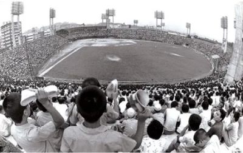
1970년~1981년
1960년대 후반부터 고교야구는 큰 인기를 얻었고, 1979년 주요 대회에서는 관객 수가 112만 명에 달했습니다. 1982년에 한국 프로야구 리그가 출범했으나, 초기에는 고교야구의 인기를 억제하려는 시도도 있었습니다. 이후 신군부 정부는 프로스포츠 창설을 통해 국민 관심을 정치에서 분산시키고자 하였고, 대기업들이 구단을 운영하게 되어 프로야구가 출범할 수 있었습니다. 청와대의 계획에 따라 지역 연고 기업들이 참여했지만, 일부 기업들은 경제적 어려움으로 참여를 꺼렸습니다. 결국 해태제과 등 일부 기업이 자원하며 6개 구단으로 프로야구가 출범하게 되었습니다.
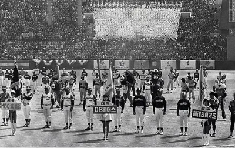
1982년~1989년
1980년 전두환 정권의 3S 정책으로 KBO 리그가 출범하며 국민적 인기를 얻었고, 1982년 시즌부터 다양한 기록과 드라마틱한 경기가 이어졌습니다. 1983년 삼미 슈퍼스타즈의 장명부는 한 시즌 30승을 기록해 화제가 되었으며, 1984년 롯데의 최동원은 한국시리즈에서 4완투승이라는 기록을 세웠습니다. 1986년부터 해태 타이거즈가 통합 4연패를 달성하며 KBO 리그 최초의 왕조를 세웠고, 1980년대 후반부터 현대 프로야구의 기틀이 마련되었습니다.
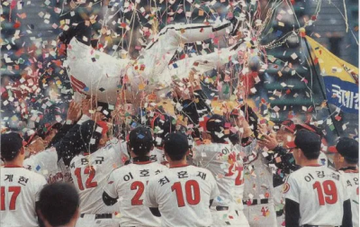
1990년~1997년
1990년 LG 트윈스가 창단 첫 해 우승을 차지하며 프로야구 인기가 급상승했고, 쌍방울 레이더스가 창단되며 리그에 참여하게 되었습니다. 1993년 해태가 V7을 달성했고, 같은 해 삼성의 양준혁과 해태의 이종범이 데뷔하여 라이벌 구도가 형성되었습니다. 1995년 LG와 OB가 각기 우승을 차지하며 리그는 관중 500만을 돌파하는 등 황금기를 맞았습니다. 1997년 IMF 외환 위기 이후 해태 왕조가 해체되고, 프로야구는 암흑기에 접어들게 됩니다.
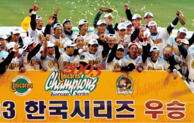
1998년~2007년
1998년 현대 유니콘스는 정민태와 박재홍의 활약으로 첫 우승을 달성했고, 외국인 선수 제도가 처음 도입되었습니다. 그러나 외환 위기와 스타 선수들의 해외 유출로 인해 관중이 급감하며 리그는 어려움을 겪었습니다. 2000년대에는 양대 리그제 시행, 현대와 삼성의 잇따른 우승 등 다양한 변화가 있었으나, 병역 비리 사건과 국제 대회 실패 등으로 위기를 맞았습니다. 2007년 SK가 창단 첫 우승을 차지했고, 재정난에 시달리던 현대는 해체되며 KBO 리그에 큰 충격을 안겼습니다.
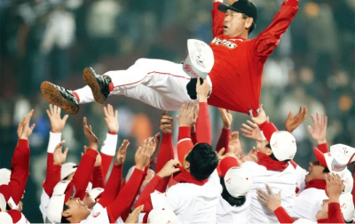
2008년~2019년
2008년부터 2013년까지 KBO 리그는 SK와 삼성의 압도적인 성적으로 강력한 경쟁 구도를 이루었습니다. SK는 2008년부터 2010년까지 강력한 불펜으로 한국시리즈 우승을 차지하며 리그를 지배했으며, 2009년에는 KIA 타이거즈가 나지완의 끝내기 홈런으로 12년 만에 우승해 큰 화제를 모았습니다. 이후 삼성은 2011년부터 2013년까지 이승엽의 활약과 함께 3연속 우승을 차지하며 최강 팀으로 군림했습니다. 이 시기 롯데 자이언츠도 '로이스터 매직'으로 두 차례 가을야구에 진출해 부산의 야구 열기를 되살렸습니다. 관중 수와 수입 면에서 리그의 최전성기를 맞은 이 시기는 KBO 리그의 황금기로 평가됩니다.
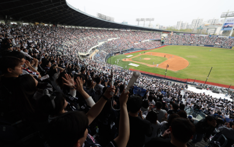
2020년~
2020년 KBO 리그는 코로나19 팬데믹의 영향으로 대부분의 경기가 무관중으로 진행되었으며, NC 다이노스가 창단 첫 정규시즌 우승을 달성하고 한국시리즈에서 통합우승을 차지했습니다. 2021년에는 SK 와이번스가 신세계그룹에 인수되어 SSG 랜더스가 되었고, kt wiz가 역대 두 번째 타이브레이커 끝에 정규시즌 우승을 차지하며 한국시리즈에서 두산을 스윕하며 통합우승을 기록했습니다. 2022년 SSG는 KBO 리그 최초의 와이어 투 와이어 우승을 이루었고, 키움 히어로즈도 예상 외의 선전을 보여주며 화제를 모았습니다. 2023년에는 LG가 29년 만에 우승하며, 박동원의 극적인 홈런으로 경기를 뒤집고 팬들의 오랜 염원을 이루어냈습니다. 이 시기는 KBO 리그의 변화를 나타내며, 새로운 팀들이 두각을 나타내는 양상을 보였습니다.
현재 총 10개의 구단의
들이 kbo 리그에서 활약하고 있습니다
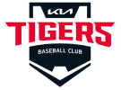
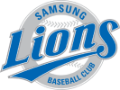
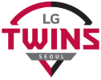
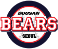
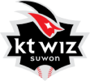
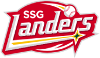
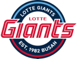
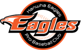
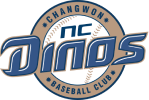
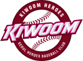
2024년 시즌 결과는?